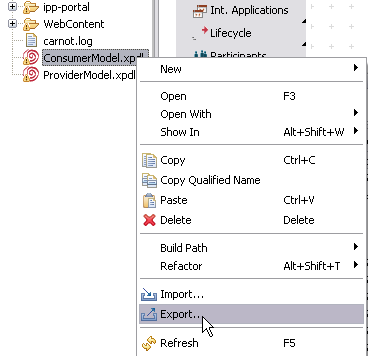

Figure: Warning - Model Version Deployment
Model deployment makes the process definitions available to the runtime environment, so that all processes can be executed according to the definitions of this model. To support model version deployment, the Stardust Process Workbench provides a Deploy Model option, which
At the time you are deploying a model, all Stardust daemons must not be running. This will apply the first time to deployments subsequent to the first model version.
To deploy a model version, open this model in the Stardust Process Workbench and proceed as follows:
Figure: Deploying a Process Model
In case you prefer to use your custom environment to deploy your model(s) to, expand the Advanced section and browse to your CARNOT_HOME and CARNOT_WORK folders. Please refer to section Environment Variables of the Installation chapter for more information on these variables.
Figure: Deploying with Custom Environment Variables
Another way to quickly start a model deployment with the default environment settings is to right-click the model in the Outline view and select Deploy Model.
Figure: Deploy Option in the Outline View
To skip the following dialogs like the login dialog and the version dialog, you can set appropriate preferences in the Process Manager Preferences, like the option to always overwrite model versions and providing the credentials for the deployment authentication. Please refer to the section Deployment of the chapter Setting Process Manager Preferences for detailed information on available deployment preferences.
To be able to quickly start a model deployment from the perspective toolbar, Stardust provides a deployment button, which can be added to the currently open perspective in the following way:
Figure: Add an Icon for Model Deployment to the Toolbar.
Now a button to start a model deployment is available in the perspective toolbar:
Figure: Model Deployment Option in the Toolbar.
Note that the deploy option only starts in case a model editor is currently open. The deployment then starts with the currently open model.
Also, note that when you are deploying a model, the Deploy Model dialog also displays the PredefinedModel. This is the technical model which gets deployed automatically at the time of deployment. It gets deployed at the time of first deployment of any other model but it is visible in the Deployment dialog if at least one model version is already deployed. For more information, please refer to the section Predefined Model of the Case - Grouping Processes chapter of the Concepts Handbook.
Figure: Model Deployment - PredefinedModel
In case no default user and password for the deployment login are set in the Process Manager Preferences, a login dialog opens with entry fields for the required credentials. Per default, the administrator account motu (username: motu, password: motu) is required. Please refer to the section Deployment of the chapter Setting Process Manager Preferences for detailed information on the available deployment preferences.
At the time of deployment Stardust performs a check whether the model to be deployed is a version of the existing model(s).
A model version dialog opens, where you can choose to overwrite a model version or to create a new model version along with other optional settings like validity date or deployment comment.
Figure: Version Deployment to a Runtime Environment
with Existing Active Model
You have the option to skip this dialog and use the default option to always deploy a new model version, by setting as preference in your Process Manager Preferences. Please refer to the section Deployment of the chapter Setting Process Manager Preferences for detailed information on how to set this preference.
Since the check is based on the model ID, it is your responsibility to ensure that you deploy a successor version of the model already deployed and you do not deploy an entirely different model with the same model ID. The ID and the OID of the model version are the criteria, which Stardust analyzes to determine whether you should perform version deployment or overwriting.
When deploying a version to a runtime environment with already deployed versions, Stardust automatically chooses between two possible operations: version deployment or overwriting.
Regardless of the selection performed automatically by the deployment dialog, you have the option to override the selection and manually choose which operation to perform.
Note: In production mode, overwriting should be performed with extreme caution. If the model to be overwritten contains elements that were deleted in the model to be deployed and those model elements have corresponding runtime audit trail objects, overwriting can introduce serious inconsistencies in the audit trail database.
Please refer to the chapter Deploying a Workflow Model of the Deployment Guide, which discusses model version deployment in detail.
Figure: Overwriting a Model
In the figure above, the version 3.0 is being redeployed to the audit trail database. Stardust compares the version ID and OID which results in enabling the option Overwrite instead of version deployment.
Stardust supports deployment of multiple models at a time from one audit trail database. You can deploy models either one by one in order or in parallel. This is possible only when the provider and consumer relationship is established between two models. It can be achieved through file connection. For more information on file connection, please refer to the section Referencing Model Elements of the External Model Resources chapter.
You should deploy the models one by one in the following order always. If the sequence is not followed, the references are not resolved and the models don't get deployed. The deployment sequence is as follows:
In case of multiple provider and consumer models, first, all the provider models should be deployed and then the deployment of consumer models should take place.
To deploy multiple models one by one:
Right-click the provider model and select Export
Figure: Deploy Provider Model
Ensure that provider model is selected in the Deploy Process Model Wizard and click Finish. The model gets deployed.
Figure: Deployed Provider Model
Right-click the consumer model and select Export

Figure: Deploy Consumer Model
Ensure that consumer model is selected in the Deploy Process Model Wizard and click Finish. The model gets deployed.
Figure: Deployed Consumer Model
When deploying a process model from modeler that has a reference to already deployed another model, the Model Version Deployment warning is displayed. In that case, first you need to deploy the Provider model.
Figure: Warning - Model Version Deployment
Parallel deployment of multiple models provides the ability to deploy a set of provider and consumer models in one click. A set of multiple models ready for deployment is called a deployment unit. Note that you cannot deploy more than one version of the same model in one deployment unit. To deploy multiple models in parallel:
Select all the models to be deployed from the Package Explorer.
Figure: Select Models
Right-click selected models and select Export
Ensure that provider and consumer models are selected in the Deploy Process Model Wizard and click Finish. All the selected models get deployed.
Figure: Deployed Provider and Consumer Model
If the model has consistency deficiencies, the automatic consistency check, which otherwise remains invisible to you, will issue a list of inconsistencies found. There are two categories of inconsistencies:
Consistency checks are implemented for:
The following rules apply to version deployment consistency checks as well as for overwrite deployment consistency checks:
If in any model of the audit trail a certain organization exists and is unscoped, it is not possible to deploy a successor model version that contains this organization as a scoped organization. A consistency error occurs, notifying that the organization is scoped, but in the audit trail it is unscoped. The deployment fails.
Figure: Consistency Error for Scoped Organization former Unscoped
Likewise it is also not supported to change from a scoped to an unscoped organization in model version deployment.
If in any model of the audit trail a certain organization exists and is scoped, it is not allowed to deploy a successor model version that contains this organization as a scoped organization, but uses a different data or data path to retrieve the scope identified. A consistency error occurs, notifying that the ID of the data or the data path is different from the data ID of the deployed scoped organization in the audit trail. The deployment fails.
Figure: Consistency Error for Changed Data.
Only primitive or structured data with type java.lang.String are allowed. In case other types are used a consistency error occurs, notifying that the data type used to retrieve the department for the scoped organization is not valid. The deployment fails.
Figure: Consistency Error for Unsupported Data Type.
It is not supported to deploy a succeeding version with changes in the department association for existing roles or organizations. That means that for any scoped organization and its entire subtree (all roles and organizations directly or indirectly connected to this organization via "Part Of" or "Works For" or "Manager Of") it is not allowed to:
All operations that will change the number or order of declared departments for any of the participants are not supported.
However, the following changes are allowed:
In case changes in the organizational structures, which are not allowed to be deployed in a succeeding model version, have been performed, a consistency error occurs, notifying that the organization tree is different from the tree in the model that was deployed earlier. The deployment fails.
Figure: Consistency Error for Changed Participant Tree.
IDs for participants have to be unique within all model participants like roles, organizations or conditional performer. In case you use the same ID for more than one participant, the deployment fails with the following error:
Figure: Consistency Error for Duplicate Participant ID.
The Administrator role is not allowed to have relationships to any organization. In case such a connection exist in the model, the deployment fails with the following consistency error:
Figure: Consistency Error for unsupported Relationship of Administrator.
It is not supported that a model participant has multiple superorganizations. Only one or zero relationships to other model participants are allowed, otherwise a consistency error occurs during model deployment and the deployment fails.
Figure: Consistency Error for Multiple Superorganizations.
The following rules apply whenever you want to deploy multiple models dependent on each other by any relationship:
If any referencing model is deployed without deploying its referenced model in that case the references are not resolved. This results in deployment error preventing deployment.
Any model cannot have two process definitions that are implementing same process interface of a referenced model. Whenever such a relationship is established, it causes deployment error. For example, process definition PD1 and PD2 are trying to implement the process interface of model M1. In this case, the deployment error is displayed because either PD1 or PD2 can implement the process interface of Model M1.
If any changes are done to the process interface and then the referenced model is overwritten, in this case the referencing model cannot get the changed references. This results in deployment error.
Whenever an overwrite takes place at the deployment time, the versions of the model to be overwritten should be taken into consideration. If it has default implementation configured for a process interface and it gets overwritten with a version without process interface then the references that are not resolved causes deployment error.
If the model set contains the models having references to models that are not part of the same model set and are not being deployed, in that the deployment error occurs. The models that are referenced should be deployed first.
Circular references are not allowed in Stardust. If the referenced model is again establishing relationship with the referencing model then the deployment error is displayed. Similarly, the model which references to the referenced model cannot become the referenced model again. For more information on Circular References please refer to the Key Concepts chapter.
The validFrom timestamp of all the referenced provider models should always be before or equal to the consumer model to be deployed. For example, the validFrom date of the Provider model is 20/02/2020 and the validFrom date of the consumer model is 11/02/2015. The references to the provider model won't get resolved because in 2020 the Provider model will be available for use.
If model A is a consumer of models B and C, and model B is itself a consumer of model C, any deployment of A and B must be linked to identical deployments of C. Note that relinking will happen only when you will deploy consumer models. So, when you deploy version one of Model C, you need to deploy version one of model A and B to see the references.
IDs of each participant in the provider and consumer model should be unique. If the provider and consumer model contains participants with identical IDs then the validation error is displayed.
The model elements that can be referenced from the provider model should not be deleted. If a deleted model element is already referenced in the consumer model, then at the time of deployment it results into broken references.
IDs of the data defined in the provider and consumer model should be unique. If the provider and consumer model contains data with identical IDs then the validation error is displayed.